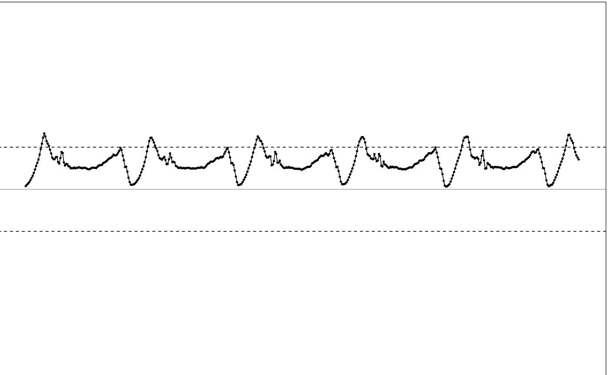
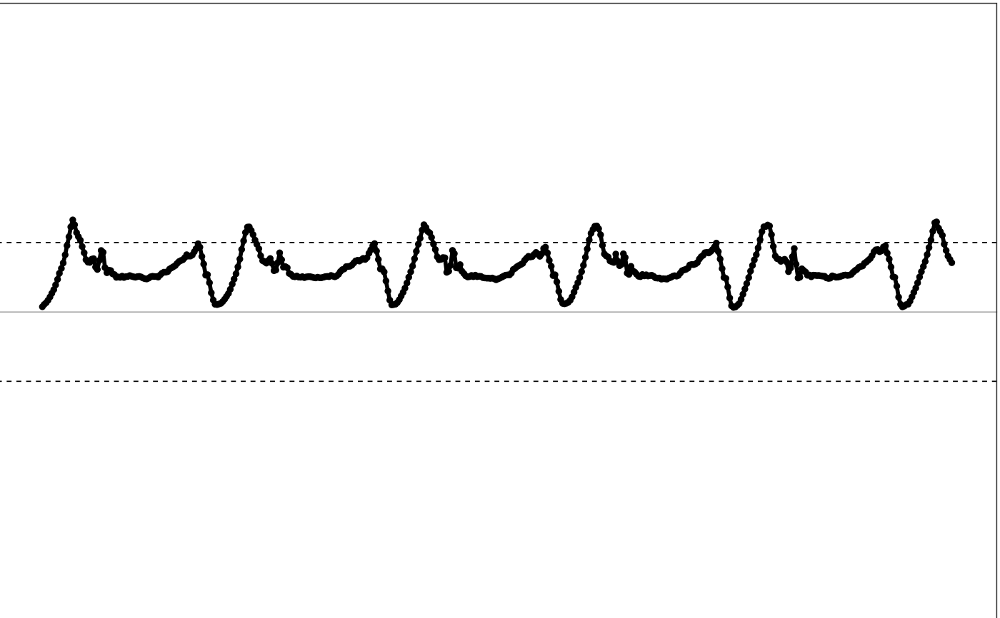
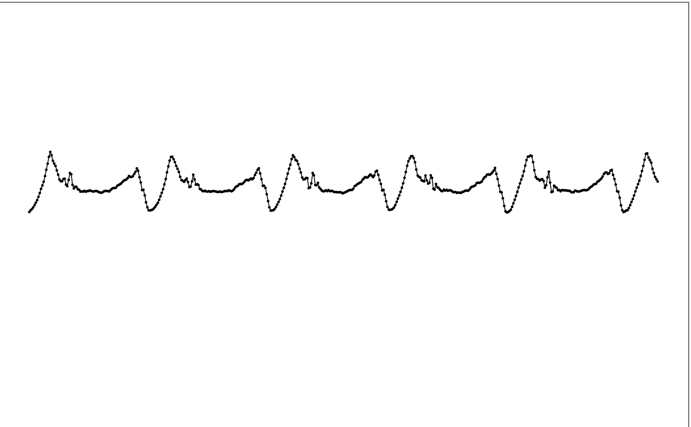
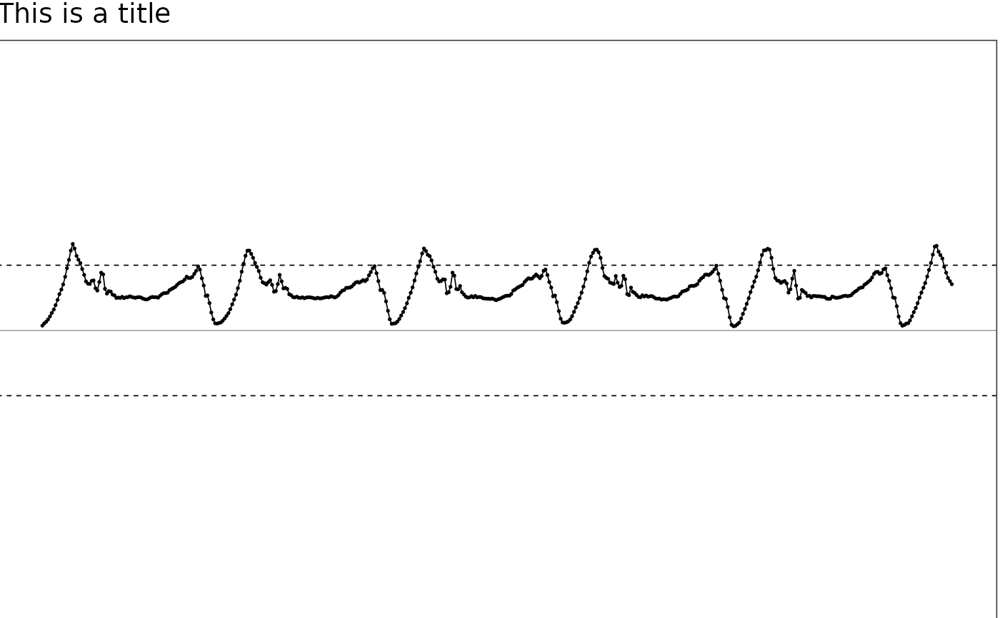

illustrate_signal plots the given uniaxial signal in illustration diagram style.
Illustration diagram style hides axes markers, unnecessary guidelines.
illustrate_signal(
data,
point_size = 0.3,
plot_point = TRUE,
line_size = 0.3,
plot_line = TRUE,
range = c(-2, 2),
plot_maxed_out_line = TRUE,
plot_origin = TRUE,
title = NULL,
plot_title = TRUE
)data.frame. The input uniaxial signal. First column should be timestamp.
number. The size of the plotted data point.
Bool. Plot signal as points if TRUE.
number. The line width of the plotted signal curve.
Bool. Plot signal with curve if TRUE.
vector. Dynamic range of the signal.
Bool. Plot dynamic range lines if TRUE. Dynamic range is set by `range`.
Bool. Plot the 0 horizontal line if TRUE.
Char. The title of the plot.
Bool. Plot title if TRUE.
ggplot2 graph object. The graph to be shown.
Other visualization functions.:
generate_interactive_plot(),
illustrate_extrapolation()
# Use sample data for testing
df = sample_raw_accel_data
# Plot it with default settings
illustrate_signal(df)

# Plot with a different style
illustrate_signal(df, point_size=1, line_size=1)

# Turn off annotation lines
illustrate_signal(df, plot_maxed_out_line = FALSE, plot_origin = FALSE)

# Use title
illustrate_signal(df, plot_title=TRUE, title = "This is a title")
